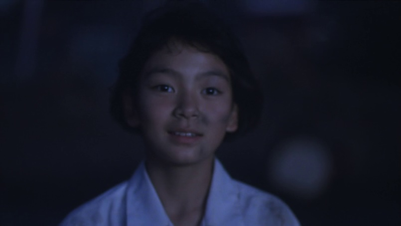
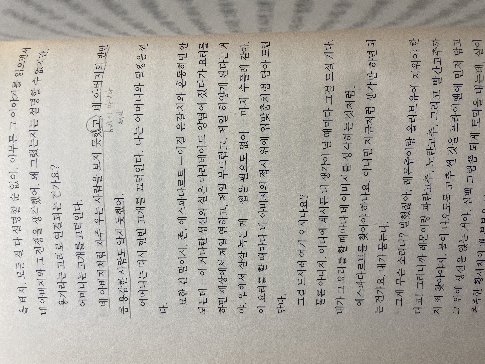

그리고
두 달만에 영화관에 갔어요.
한동안 영화를 잊고 지냈네요.
<이사>*라는 영화를 보았어요.
오래토록 ‘보고싶어요’에 품었던 영화인데 재개봉한다는 소식에, 아침 조조로 달려갔어요.
렌의 아버지는 이사를 갔어요.
렌은 어머니의 이혼서류를 숨겨요.
스무 살 때 내가 쓰던 노트북에는 합의이혼서 파일이 있었어요.
어쩌다 그게 하필 내 노트북에 있었는지, 내 노트북으로 적었던 건지는 기억이 잘 안 나네요.
진행되지는 않았지만 그 파일을 어찌해야 할지 몰라, 차마 열어보지도 못하겠고, 아무에게도 말하지 않은 채 두근거리며 노트북 깊은 어딘가에 두었던 그 기억은 선명해요.
지난 주 새로 사랑하기를 바라며 마음이 새로, 새로, 부풀었다가, 그렇게 언제까지고 새로 사랑할 수 있는걸까에 닿았어요.
언젠가는 관계의 기본값은 평생 가는 것이고, 그 사이에 불미스러운 일이 있어야 헤어지는 것이라고 믿은 시간이 있었어요.
나는 슬펐어요.
지금 보니 인큐비닐에 갇혀 길게 자란 애호박은 예쁘고 재미없고 숨막혀요. 영원이라는 말은 무책임하게 길어요.
커다랗게 마음껏 자란 애호박 큼지막하니 썰어 구워 먹기만 해도 맛있던데.
내가 지금 아는 것은 매번 당장 새로 모른다는 것 뿐이에요. 끝은 우리 앞에 서 있어요. 툭 치면 떨어질지 안 쳐도 힘이 풀려 떨어질지.
나는 분명 여전히 슬퍼요.
무슨 표정을 지어야 할지 모르겠지만 속은 시끄러워 죽겠는 기분이 들 때마다 달려서 제일 멀리 도망치고 싶어요.
도망치면 꿈에서 다시 만나요. 끝이 없는 것처럼. 나의 꿈에서는 배수구 머리카락 찌꺼기마냥 어느새 커진 것들이 나뒹굴어요.
그리고 나의 바램은 이제 그만 도망치고 두 눈 똑바로 보고 말하는 거에요.
おめでとうございます - (축하해요) 하고. 소리지르자 후련하게.

끝이 있다는 거, 좋은 걸지도 모르겠어요.
빨리 어른이 될게요.
렌은 엄마에게 했어요.
어른이 되면 어떤 게 달라질까요?
내가 좋아하는 한 어른은 어른은 희망을 버리고 그리고 힘낼 수 있는 사람일 수 있겠다고 했어요.*이동진, Youtube
나는 ‘그럼에도 불구하고’라는 접속어를 좋아했어요.
힘들어요. 그럼에도 불구하고 희망을 깨물어요.
마법 같잖아요.
그리고 너무 마법 같아요.
아무리 말이 마법이지만 마법의 효과가 풀릴 즈음 실눈 떠보니 힘들어요가 아직 떡하니 그 잔상이 있잖아요.
살찐 희망은 헛소리입니다*!
힘들어요. 그리고 희망을 깨물어요.
희망을 버려요. 그리고 힘을 내요.

당신은 나에게 소중한 사람이었어요. 그리고 나는 당신이 하는 말이 괴로웠어요.
잊었어요. 그리고 계속 기억해요.
당신은 나를 괴롭게 해요. 그리고 나는 당신이 잘 살았으면 좋겠어요.
엄마는 우리 때문에 살았다고 했어요. 그리고 엄마는 살기 위해 집을 나갔어요.
사랑했어요. 그리고 안녕!!!!!!!!!!!!!
사실은 그냥 그리고야. 우리와, 모순 넘치는 여기를 이을 가냘픈 희망은 이 놈이야.
하고 곱씹어요.
도망치지 않으려면 이 그리고랑 친해질 연습을 해야겠네요.
편하게 울며 아 좋은 영화를 보면 이런 기분이었지. 싶었어요.
내가 이래서 영화를 좋아했었지.
그리고 아무리 좋은 영화도 매번 엔딩크레딧이 올라가요.
시작. 그리고 끝. 그리고 다시 시작!
끝! 끝! 끝!!!
おめでとうございます ~~~~~~~~~~~~~